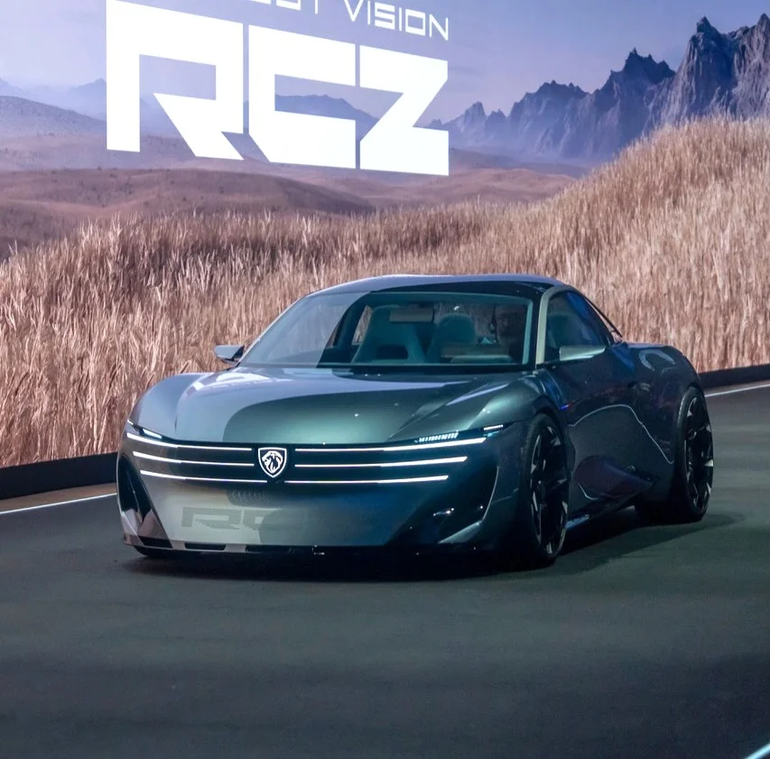
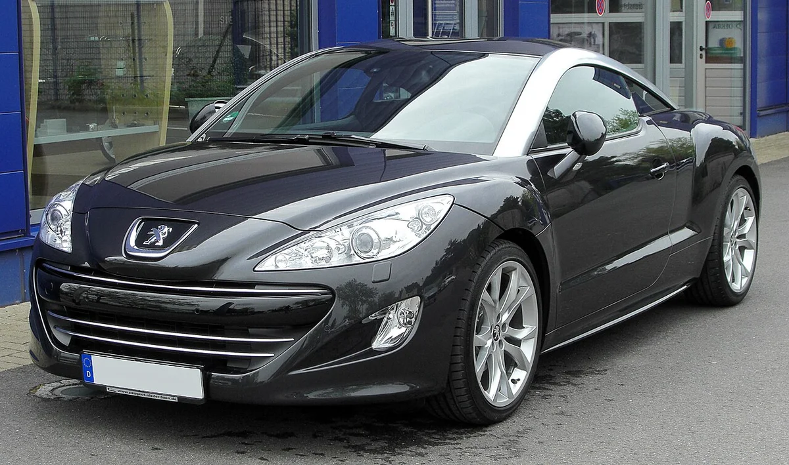
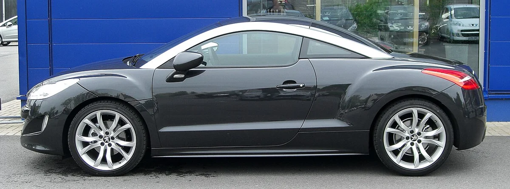
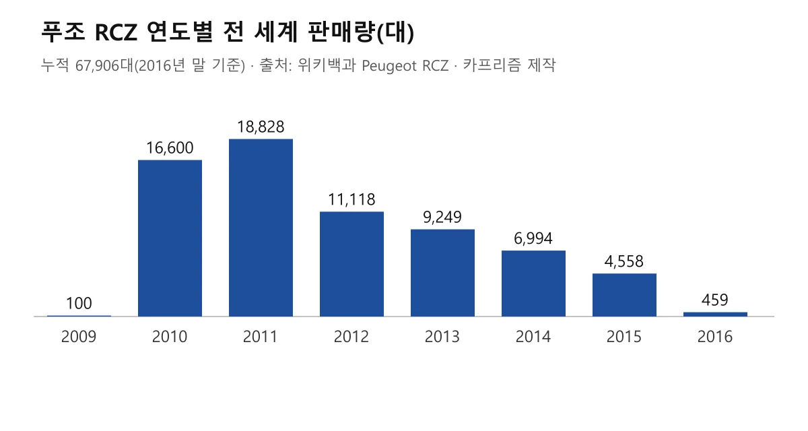
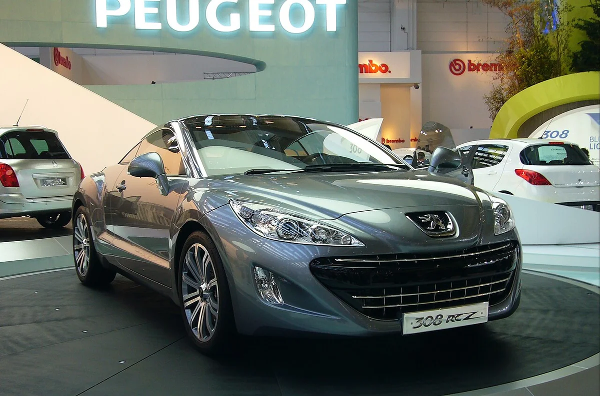
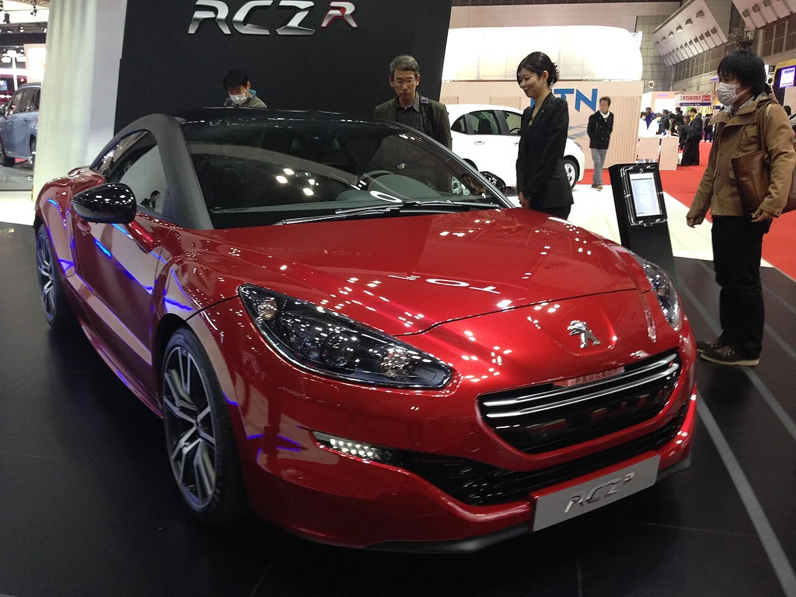
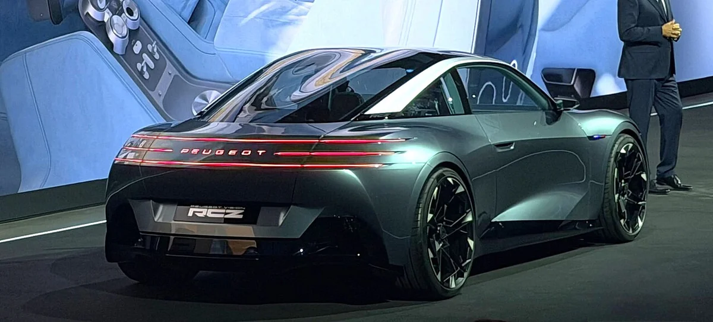
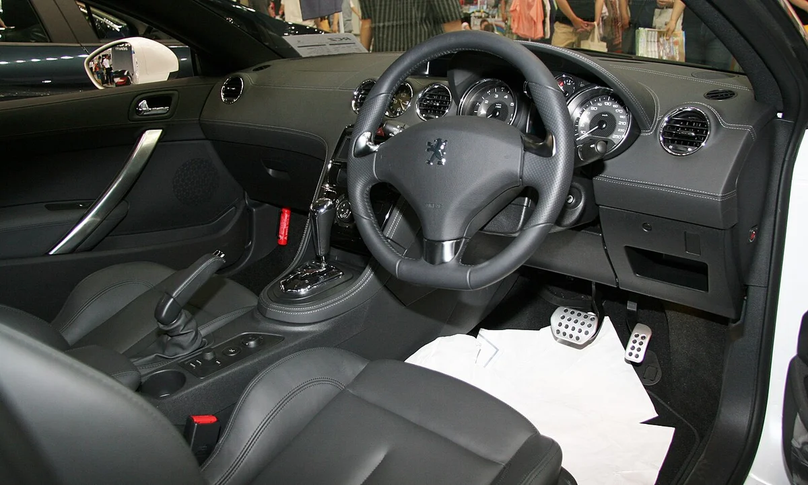
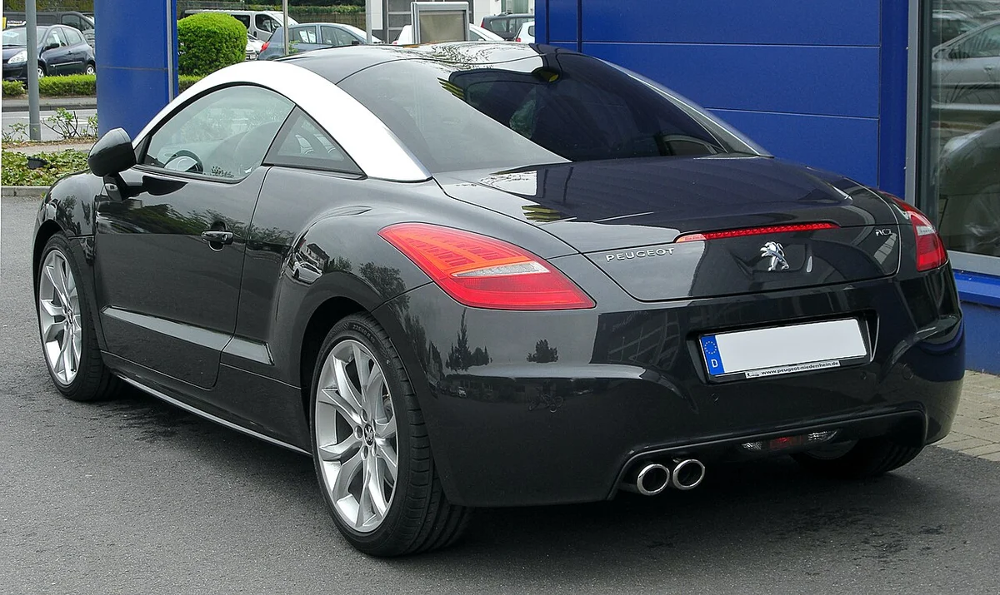

▲ 2026 파리모터쇼에 전시된 푸조 RCZ 비전 콘셉트의 전면 ⓒ Bagnole55, Wikimedia Commons (CC BY-SA 4.0)
"예쁜 쿠페 하나쯤은 다시 나와 줬으면 좋겠다"는 생각, 한 번쯤 해보셨다면 이 소식이 반가울 것이다. 2015년 단종된 푸조 RCZ의 이름이 2026 파리모터쇼에서 'RCZ 비전'이라는 전기 콘셉트카로 돌아왔다. 이 글에서는 무엇이 공개됐는지, 500마력과 600km라는 숫자가 어디까지 믿을 만한지, 그리고 정말 살 수 있는 차가 되는지를 확인된 사실만 골라 정리한다.
쿠페가 귀해진 시장에서 RCZ라는 이름이 다시 나왔다는 것만으로도 반가운 이야기지만, 콘셉트카의 숫자는 늘 '목표'라는 점을 함께 기억해 두면 좋다.
결론부터 말하면 양산 계획은 공개되지 않았고 가격·한국 출시도 정해진 것이 없다. 이 글은 2026년 10월 17일 현재 스텔란티스 미디어(푸조) 보도자료(10월 11일자, 영어판)의 내용과, 이를 인용한 electrive·VISION mobility·NetCarShow·카엑스퍼트(CarExpert) 등의 보도, 위키백과를 교차 확인해 정리했다. 스텔란티스 미디어 사이트는 접속이 차단돼 보도자료 원문 전체를 직접 열람하지는 못했고, 검색 요약과 보도자료를 그대로 옮긴 매체를 통해 수치를 확인했다.
1. RCZ 비전은 어떤 차인가 — 공개된 사양 한눈에
RCZ 비전은 4인승 전기 쿠페 콘셉트다. 푸조는 이 차를 2009~2015년 RCZ 쿠페의 후계로 소개하면서 브랜드의 '감성 선언문'이라고 표현했다. 보도자료는 10월 11일자로 배포됐고, 푸조는 새 디자인 언어 '펠라인 퓨처(Feline Future)'가 이 차에서 처음 표현됐다고 밝혔다.
이 디자인 언어는 자유, 용기, 우아함, 내면의 힘, 본능이라는 다섯 가지 원칙으로 설명된다. 푸조 CEO 알랭 파베는 "미래에 확고히 초점을 맞춘, 궁극의 운전 즐거움을 위한 차"라고 소개했고, 디자인 총괄 마티아스 오시앙은 "야성적인 힘과 소재의 정밀함 사이의 긴장에서 태어났다"고 설명했다(영문 인용을 본지가 번역).

▲ 파리모터쇼 무대에 오른 RCZ 비전. 배경에 RCZ 로고가 크게 걸려 있다 ⓒ 2cv2026, Wikimedia Commons (CC BY-SA 4.0)
| 항목 | 내용 | 비고 |
|---|---|---|
| 차종 | 4인승 전기 쿠페 콘셉트 | 양산 미확정 |
| 최고출력 | 368kW(500마력) | 푸조 표기는 500hp이며 368kW와 같은 값이다. 일부 매체의 373kW는 500hp를 영국 마력 기준으로 환산한 표기이고, evo는 493bhp로 표기했다 |
| 주행거리 | 최대 600km | 카엑스퍼트는 WLTP 목표치로 표기. 인증 수치 아님 |
| 전비 | 11.5kWh/100km | WLTP 복합 목표치이며 최종 확정 전(NetCarShow·moto-match 전재 기준) |
| 충전 | 10→80% 약 10분 | 충전 출력(kW)은 미공개 |
| 전기 아키텍처 | 1,000V | 푸조 보도자료 기재. 10분 충전이 가능한 이유로 설명 |
| 플랫폼 | 스텔란티스 STLA One | 보도자료 기재. electrive는 푸조가 그룹 내 첫 적용 브랜드라고 전함 |
| 배터리 | 전고체, 두께 110mm | 팩토리얼 에너지 공동 개발, 용량(kWh) 미공개 |
| 휠 | 앞 21인치 · 뒤 22인치 단조 알루미늄 | NetCarShow·카엑스퍼트 |
| 섀시 기술 | 스티어 바이 와이어, 푸조 최초 브레이크 바이 와이어 | 조향 기계 연결 없음, 가변 비율 |
| 주행 보조 | 레벨 2++ 예고 | 시내·교외 핸즈프리(보도자료 요약) |
| 0→100km/h·토크·제원 | 미공개 | 전장·휠베이스·무게 등 치수도 공개되지 않음 |
눈여겨볼 점은 '없는 숫자'다. 배터리 용량, 가속 시간, 토크, 차체 크기는 이번 보도에서 확인되지 않았다. 콘셉트카는 원래 이런 값을 비워 두는 경우가 많아서, 위 표의 주행거리와 전비도 실제 인증을 받은 수치가 아니라 제조사가 제시한 목표로 읽어야 한다.
플랫폼은 푸조 보도자료에 스텔란티스의 STLA 원(STLA One)이라고 적혀 있다. electrive는 이 플랫폼을 기존 아키텍처 다섯 가지를 통합하려는 '메가 플랫폼'이라고 설명하며 푸조가 그룹에서 처음 쓰는 브랜드라고 전했다.
출력 표기가 매체마다 달랐던 이유도 정리된다. 푸조가 밝힌 500hp는 368kW와 같은 값이고, 373kW는 500마력을 영국 마력으로 환산한 숫자다. 서로 다른 사양이 아니라 같은 출력의 다른 표기다.
2. 11년 전 사라진 RCZ — 구형은 어떤 차였나
원조 RCZ는 푸조 308 기반으로 만든 2+2 쿠페다. 위키백과에 따르면 2007년 프랑크푸르트 모터쇼에 '308 RCZ' 콘셉트로 먼저 등장했고, 2009년 프랑크푸르트에서 양산형이 공식 소개돼 2009년 말 생산에 들어갔다. 2015년 9월 18일 오스트리아 그라츠의 마그나 슈타이어 공장에서 마지막 차가 만들어졌다.

▲ 2010년 촬영된 양산형 푸조 RCZ의 전면. 이 차의 쿠페 실루엣이 이번 비전 콘셉트의 출발점이다 ⓒ M 93, Wikimedia Commons (저작자 표시 라이선스, 2010.5.8 촬영)
| 항목 | 내용 |
|---|---|
| 생산 | 2009~2015년, 오스트리아 그라츠 마그나 슈타이어 |
| 플랫폼 | PSA PF2, 앞엔진 전륜구동 2+2 쿠페 |
| 가솔린 | 1.6 THP 156PS · 204PS, 2014년 270PS 추가 |
| 디젤 | 2.0 HDi 163PS(2010~2014), HDi FAP 165(2012~2015) |
| 고성능판 | RCZ R(270PS), 2014년 1월 영국 판매, 3,054대 생산 |
| 누적 판매 | 2016년 말까지 67,906대 |

▲ 구형 RCZ의 측면. 지붕 양쪽을 따라 뒤로 이어지는 아치가 가장 눈에 띄는 디자인 요소였다 ⓒ M 93, Wikimedia Commons (저작자 표시 라이선스, 2010.5.8 촬영)
판매 추이를 보면 흥행 정점은 초기였다. 위키백과 기준으로 2010년 16,600대, 2011년 18,828대에서 2012년 11,118대, 2013년 9,249대, 2014년 6,994대, 2015년 4,558대로 줄었다. 단종 이후에도 재고 판매가 2016년 459대, 2017년 10월 말까지 10대 이어졌다.

▲ 구형 RCZ 연도별 판매량. 2011년 18,828대가 정점이었다 자료: 위키백과 Peugeot RCZ, 카프리즘 제작
단종 이유는 위키백과에 나와 있지 않아 이 글에서는 다루지 않는다.
구형은 크기와 성능도 기억해 둘 만하다. 위키백과에 따르면 전장 4,290mm, 전폭 1,845mm, 휠베이스 2,612mm였고, 270PS 고성능판 RCZ R은 0→100km/h 5.9초를 냈다. 디젤 RCZ는 2010·2011년 뉘르부르크링 24시간 레이스 클래스에서 우승했고, 2010년 탑기어 '올해의 쿠페'에도 올랐다.

▲ 2007년 프랑크푸르트 모터쇼에 나온 308 RC Z 콘셉트. 양산형 RCZ의 출발점이다 ⓒ Rutger van der Maar, Wikimedia Commons (CC BY 2.0)

▲ 270PS 고성능판 RCZ R. 2013년 도쿄 모터쇼에 전시된 모습이다 ⓒ Loadbeta, Wikimedia Commons (CC0)
3. 구형의 DNA는 어디에 남았나 — 닮은 점과 완전히 달라진 점
RCZ 비전은 구형의 상징 몇 가지를 현대식으로 옮겨 왔다. 푸조 보도자료와 이를 옮긴 매체들을 종합하면 정차 중엔 숨어 있다가 달릴 때만 나오는 액티브 스포일러, 보닛에서 뒤쪽까지 이어지는 유리 '더블 버블' 루프가 구형을 향한 오마주로 꼽힌다. 앞뒤 라이트는 가로로 이어진 얇은 라이트바로 처리했다.

▲ RCZ 비전의 후면. 좌우로 길게 이어진 테일램프와 지붕 곡선이 구형과 이어지는 부분이다 ⓒ 2cv2026, Wikimedia Commons (CC BY-SA 4.0)
| 구분 | 구형 RCZ (2009~2015) | RCZ 비전 (2026 콘셉트) |
|---|---|---|
| 파워트레인 | 1.6 터보 가솔린·2.0 디젤 | 전기, 전고체 배터리 주장 |
| 최고 출력 | 156~270PS | 약 500마력(주장) |
| 시트 | 2+2 | 4인승 |
| 지붕 | 알루미늄 루프 아치가 이어지는 쿠페 지붕 | 더블 버블 글래스 루프로 재해석 |
| 실내 | 아날로그 계기판·원형 스티어링휠 | 하이퍼스퀘어 컨트롤러, 투명 마이크로 LED, 스티어 바이 와이어 |
| 뒷좌석 | 2+2(좁은 뒷자리) | 성인 2명 탑승, 등받이를 접으면 적재 확대(evo·NetCarShow) |
| 상태 | 양산·단종 | 콘셉트, 양산 미정 |

▲ 구형 RCZ의 실내(우핸들 사양). 비전 콘셉트는 원형 스티어링휠 대신 직사각형에 가까운 하이퍼스퀘어 컨트롤러를 단다 ⓒ TTTNIS, Wikimedia Commons (CC0)
실내는 새 아이콕핏을 바탕으로 투명 마이크로 LED 디스플레이, 운전자 쪽으로 기울어져 떠 있는 센터 디스플레이(끌 수 있다), 가변 비율 스티어 바이 와이어를 담았다. 조향은 저속에서 한 바퀴가 안 되는 회전으로 끝까지 꺾이는데, 일반 스티어링휠은 약 세 바퀴다. 푸조 최초의 브레이크 바이 와이어도 적용됐다.
마감은 연한 하늘색 알칸타라와 재활용 가죽 소재 펠리노바(Pelinova)를 쓰고, 대시보드 시계는 프랑스 시계 브랜드 세리카(Serica)와 협업했다. 스티어링휠에 연결된 기계 장치가 없는 방식이어서, 양산차에 들어가려면 법규와 안전 검증이 따로 필요하다.
같은 파리모터쇼에서 푸조는 RCZ 비전 외에도 옛 모델에서 영감을 받은 콘셉트를 함께 선보였다. 이쪽은 푸조 E-T16 콘셉트 기사에서 따로 다뤘다.
4. 전고체 배터리, 얼마나 현실적인가 — 확인된 사실만
확인된 것은 '누구와 만들었는가'와 '어디까지 시험했는가'다. 이 콘셉트의 배터리는 미국 팩토리얼 에너지와 개발한 것으로 보도됐다. 스텔란티스는 2021년 팩토리얼에 7,500만 달러를 투자했고, 2024년 10월 23일에는 팩토리얼의 전고체 셀을 스텔란티스 STLA 라지 플랫폼 기반 닷지 차저 데이토나 시범 차량군에 넣겠다고 발표했다.
| 시점 | 내용 | 확인 출처 |
|---|---|---|
| 2021년 | 스텔란티스, 팩토리얼에 7,500만 달러 투자 | 2024.10 발표문(비즈니스와이어) |
| 2024.10.23 | 닷지 차저 데이토나 시범 차량군에 팩토리얼 FEST 전고체 셀 적용 발표, 2026년 도로 주행 예정 | 동일 |
| 셀 성능 | 에너지 밀도 390Wh/kg 이상(제조사 주장) | 동일 |
| 2025.4.24 | 77Ah FEST 셀 검증 발표: 375Wh/kg, 600회 넘는 충방전, 15→90% 약 18분, -30~45℃ 작동, 2026년까지 실증 차량군 투입 계획 | 스텔란티스·팩토리얼 보도자료(전재) |
| 2026.10 | RCZ 비전에 110mm 두께 전고체 배터리 적용 콘셉트 공개 | electrive, 카엑스퍼트 |
현실성을 가늠할 때 세 가지를 구분해야 한다. 첫째, 팩토리얼이 내세운 390Wh/kg은 제조사 주장이며, 인사이드EVs는 이 셀을 완전 고체가 아닌 '준고체(quasi-solid-state)'로 설명했다. 같은 '전고체'라는 표현이라도 업체마다 정의가 다를 수 있다는 뜻이다.
둘째, 2025년 4월 검증 발표에서 밝힌 수치는 375Wh/kg 수준이고 충방전은 600회를 넘겼다. 승용차는 이보다 훨씬 긴 수명을 요구받기 때문에 아직 검증 단계라는 뜻으로 읽힌다(본지 판단). 셋째, 푸조 보도자료는 RCZ Vision의 배터리를 팩토리얼과 개발했다고만 밝히며 위 FEST 셀과 같은 제품인지는 명시하지 않았다. 시범 차량군이 실제로 제작·주행에 들어갔는지도 이번 조사에서 확인하지 못했다.
📍 전비로 거꾸로 따져 본 배터리 크기 (본지 계산)
제조사 주장 전비 11.5kWh/100km와 주행거리 600km를 곱하면 약 69kWh다. 배터리 용량은 공개되지 않았으므로 어디까지나 대략적인 역산이며, 실제 용량과는 다를 수 있다.
카엑스퍼트는 전고체 배터리가 기존 리튬이온보다 1회 충전당 주행거리가 20~50% 길 수 있다고 전했다. 다만 이는 기술 일반론에 가까운 설명이며 RCZ 비전의 600km가 인증을 받은 값이라는 뜻은 아니다. 스텔란티스와 팩토리얼의 2024년 발표문은 아래에서 볼 수 있다. 스텔란티스·팩토리얼 발표문 바로가기
5. 정말 살 수 있나 — 확정된 것과 확정 안 된 것
지금 시점에서 양산을 확인해 줄 근거는 없다. electrive는 푸조가 양산 계획에 대해 언급하지 않았다고 전했고, 카엑스퍼트도 양산 확정 모델이 아니라고 밝혔다. 푸조 보도자료는 이 차의 하이퍼스퀘어가 차세대 E-208에 들어갈 양산형과 같다고 밝혔고, 카엑스퍼트는 그 시점을 2027년 출시 예정인 차세대 208로 전했다. 출시 연도는 단일 매체 보도라 확정으로 보기 어렵다. 콘셉트의 기술 일부가 양산차로 먼저 이어질 가능성은 있어도, RCZ 쿠페 자체의 양산은 별개의 문제다.
| 항목 | 상태 |
|---|---|
| 콘셉트카 공개 | 확정(2026 파리모터쇼) |
| 팩토리얼 공동 개발 전고체 배터리 | 푸조 보도자료 기재 |
| STLA One 플랫폼 | 푸조 보도자료 기재 |
| 500마력·600km·10분 충전 | 제조사 주장, 인증 아님(전비는 WLTP 목표, 확정 전) |
| 양산 여부 | 미확정(푸조 언급 없음) |
| 가격 | 미정 |
| 한국 출시 | 미정, 언급 확인 못 함 |
그래서 이 차는 지금은 '미래 푸조 디자인과 전기 기술의 방향을 보여주는 쇼카'로 보는 게 맞다. electrive도 즉각적인 후속 모델이라기보다 미래 전기차의 영감에 가깝다고 평가했다. 국내 푸조 소식은 푸조 5008 가격 가이드와 푸조 3008 하이브리드 기사에서 볼 수 있다.
✅ 이 소식을 볼 때 체크포인트
· 500마력·600km·10분 충전은 모두 콘셉트 단계의 제조사 주장이다
· 전고체 배터리의 양산 시점과 가격은 공개되지 않았다
· 국내 가격·출시 계획은 없으므로 '살 수 있는 차'로 기대하기엔 이르다
· 같은 모터쇼의 다른 콘셉트는 스텔란티스 파리모터쇼 미리보기에서 볼 수 있다
구형 RCZ의 상세 이력은 위키백과에서 확인할 수 있다. Peugeot RCZ 위키백과 바로가기

▲ 구형 RCZ의 후면. 듀얼 배기구와 곡선 지붕이 특징이며, 비전 콘셉트는 같은 자리에 가로로 이어진 라이트바를 달았다 ⓒ M 93, Wikimedia Commons (저작자 표시 라이선스, 2010.5.8 촬영)
6. 요약
푸조가 2026 파리모터쇼에서 2015년 단종된 RCZ의 이름을 이은 전기 쿠페 콘셉트 'RCZ 비전'을 공개했다. 368kW(약 500마력), 최대 600km, 10→80% 약 10분 충전, 1,000V 아키텍처, 팩토리얼 에너지와 개발한 110mm 두께 전고체 배터리가 제시됐다.
모두 콘셉트 단계의 제조사 주장이며 양산·가격·한국 출시는 확정되지 않았다. 이 글의 수치는 2026년 10월 17일 현재 푸조 보도자료(스텔란티스 미디어)의 내용을 전재·인용한 매체들과 위키백과를 교차 확인한 것이며, 보도자료 원문 전체는 접속이 막혀 직접 열람하지 못했다.